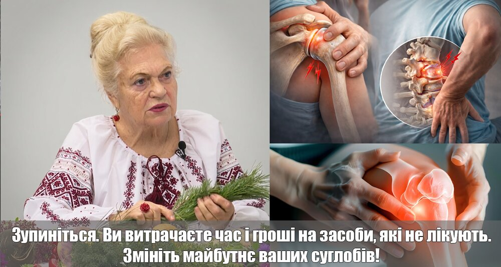
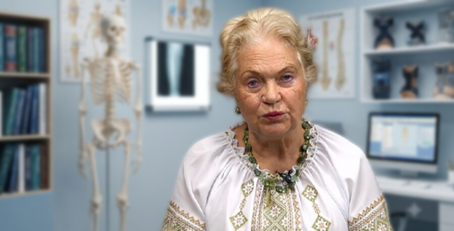
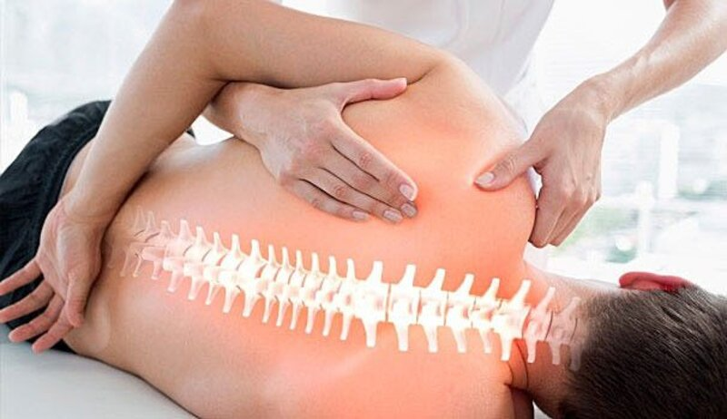
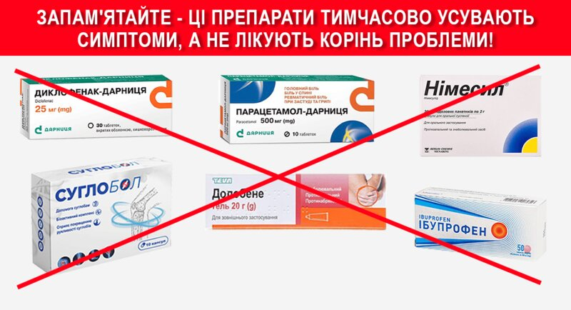
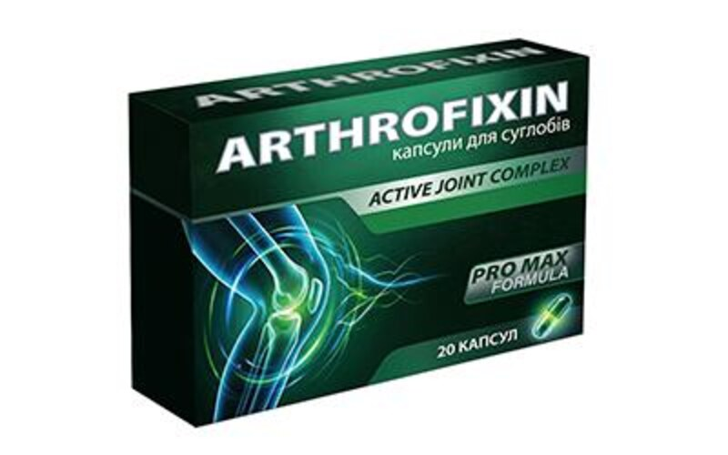
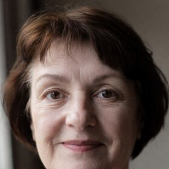
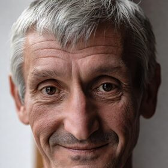
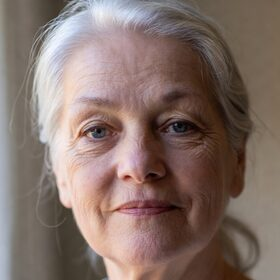

За статистикою, після 40 років біль у суглобах або попереку відчувають 8 із 10 людей. Більшість списує це на втому, погоду чи «нормальний вік». Але часто це перші ознаки порушень в опорно-руховому апараті.
Суглоби та міжхребцеві диски не відновлюються самі по собі. Якщо процес руйнування хряща вже почався, без правильного підходу він лише посилюється. Спочатку біль з’являється після навантаження. Потім — у стані спокою. Згодом обмежуються рухи, з’являються запалення, оніміння, хрускіт.

Як усе починається насправді
Проблеми із суглобами та спиною рідко стартують із сильного болю. Найчастіше це ледь помітні сигнали, які легко ігнорувати.
Спочатку з’являється:
- легкий дискомфорт після навантаження або довгого сидіння;
- ранкова скутість, яка «ніби розходжується»;
- неприємне поколювання чи оніміння;
- хрускіт у колінах, плечах або попереку.
На цьому етапі більшість людей переконують себе, що це втома, погода або «нічого страшного». Але саме тоді процес уже запущений: хрящова тканина втрачає еластичність, зменшується кількість «змазки» в суглобі, навантаження на кістки й зв’язки зростає.
Що відбувається далі
З часом симптоми стають відчутнішими. Біль з’являється частіше і триває довше. З’являється набряк. Рухи стають обмеженими — складніше нахилятися, підніматися сходами, довго стояти. У випадку з хребтом міжхребцеві диски можуть почати тиснути на нерви, викликаючи різкий простріл у поперек або ногу.
Те, що колись було «терпимим дискомфортом», перетворюється на стан, який обмежує повсякденне життя: роботу, сон, прогулянки, турботу про близьких.

Чому мазі, уколи й «потерпіти» часто не вирішують проблему
Наталя Земна зазначає: вона щодня бачить людей, які місяцями й роками терплять біль і витрачають гроші на засоби з коротким ефектом.
«Вони п’ють знеболювальні, ходять на масажі, роблять уколи, але проблема нікуди не зникає. Головна помилка — чекати, що все минеться саме по собі, або лише «гасити» біль. Це як вимикати будильник, не вирішуючи причину.» — Наталя Земна
Три поширені підходи — і їхні межі:
1. Масажі, компреси, фізіотерапія. Можуть покращити кровообіг і зняти напругу в м’язах, але не відновлюють хрящ. Як тільки людина припиняє процедури, дискомфорт часто повертається.
2. Знеболювальні та гормональні уколи. Прибирають біль на певний час. Руйнування суглоба при цьому може тривати, а людина цього не відчуває, доки не стане пізно. Тривалий прийом знеболювальних дає навантаження на печінку, нирки та шлунок.
3. Операція та протез. Крайній випадок. Дорого, довге відновлення, ризики ускладнень. Не завжди гарантує повне повернення рухливості. Багато хто йде на хірургію, навіть не знаючи про м’якші варіанти підтримки вдома.


Що пропонують як комплексну підтримку
Після років роботи з людьми, у яких болять коліна, плечі й поперек, у фокусі опинився підхід не лише «зняти симптом», а підтримати хрящову тканину і комфорт руху в домашніх умовах — без наркозу, проколів і стаціонару.
Так з’явився комплекс у капсулах ArthroFixin (Active Joint Complex). Його позиціонують як засіб підтримки суглобів і хрящів для тих, хто не хоче змиритися з постійним болем і шукає варіант без агресивного втручання.

За відгуками тих, хто проходив курс, уже на 10–14 день часто стає легше вставати вранці, менше «ниить» після навантаження, простіше підніматися сходами. Повний курс зазвичай від 3–4 тижнів. Результати індивідуальні — комплекс не замінює консультацію лікаря і не є лікарським засобом.
Як приймають
- 2 капсули 2 рази на день після їжі (4 на добу);
- вранці після сніданку і ввечері після вечері;
- курс від 3–4 тижнів, далі — за самопочуттям і рекомендацією фахівця.
Що кажуть люди

«Коліна хрустіли і боліли на сходах. Через три тижні стало легше підніматися. Зранку вже не така “дерев’яна”.»

«Поперек нив після роботи. Після курсу можу спокійніше нахилятися. Знову живу без постійного болю.»

«Плече не давало підняти руку. Шукала без уколів. Стало м’якше рухатися, сон кращий.»
Доставка і умови
Доставка Новою Поштою по Україні. Оплата при отриманні — без передоплати. Посилку можна перевірити на відділенні. Дані заявки не передаються третім особам.